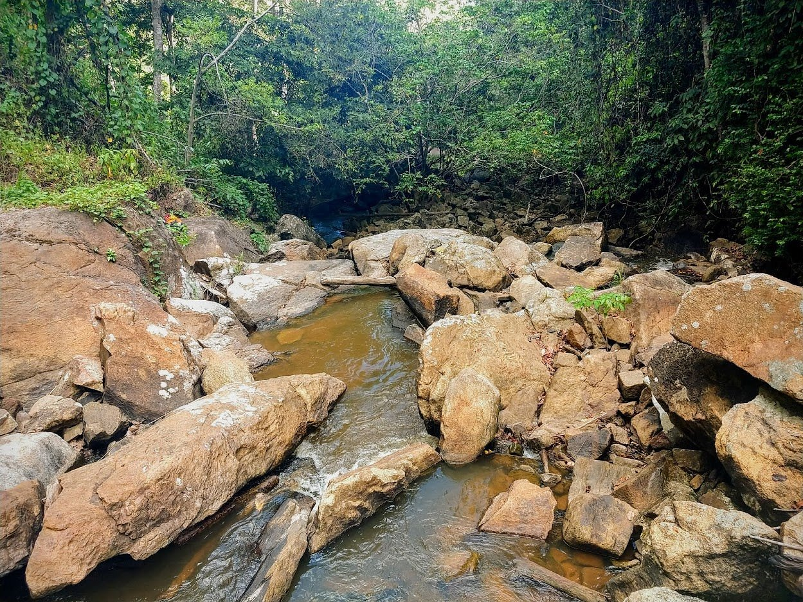
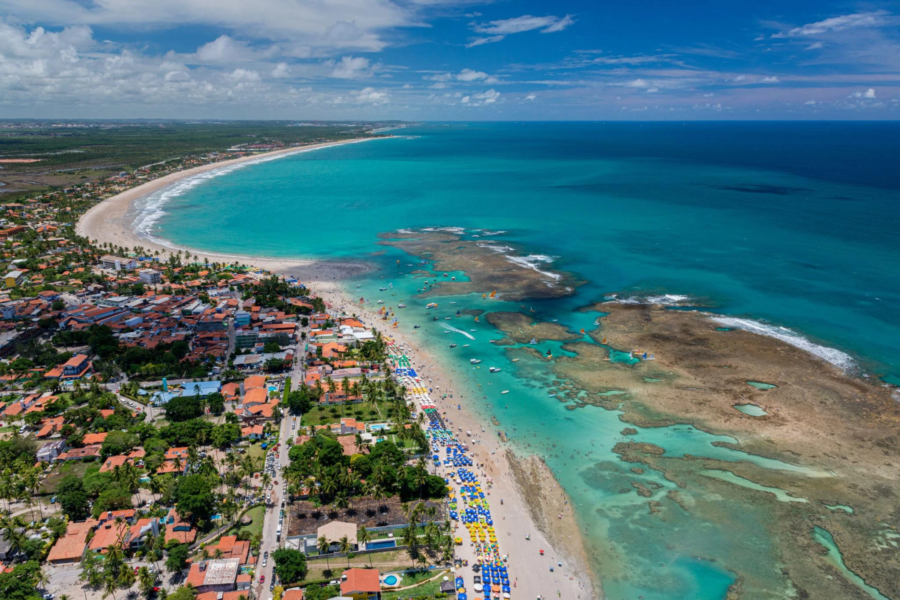
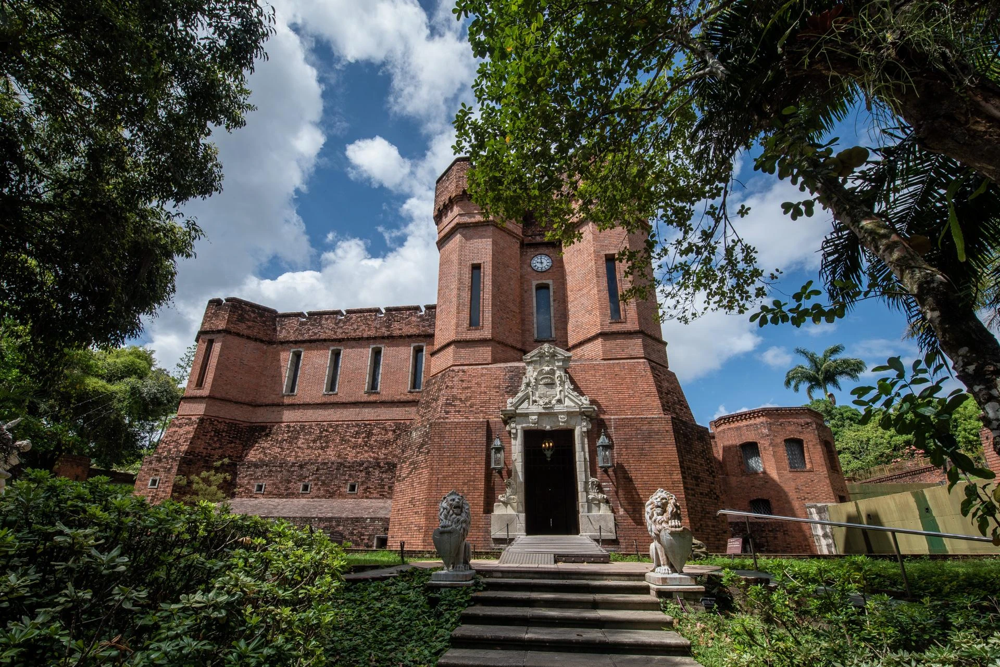
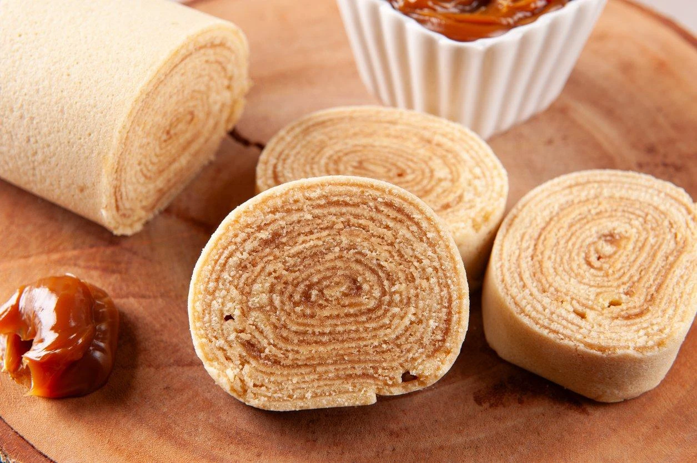
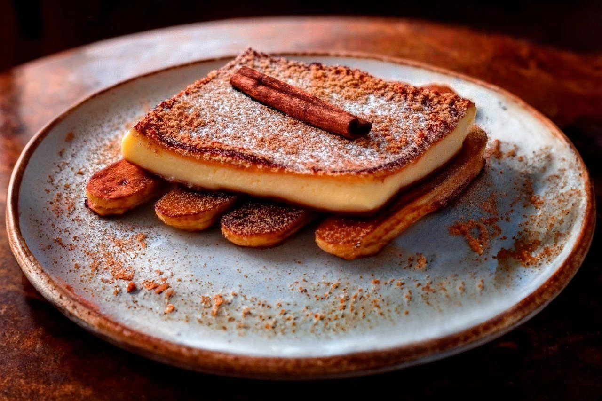
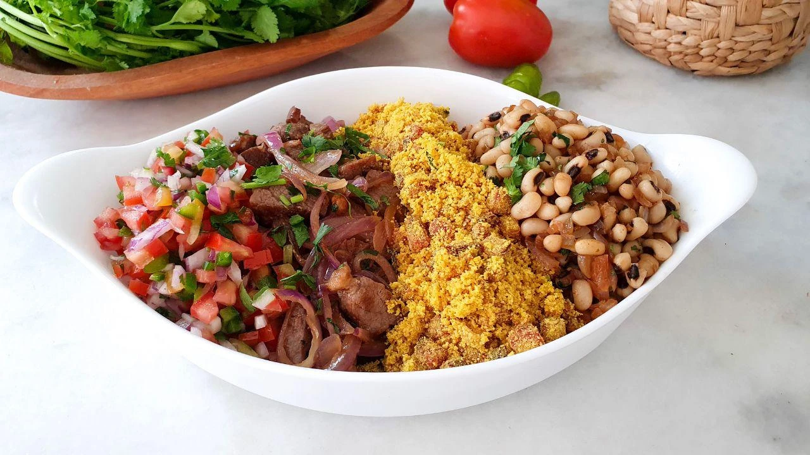

Capital
Recife
Conheça destinos, culturas, sabores e paisagens de todas as regiões
brasileiras.
Destinos, culturas e paisagens
incríveis te esperam.
Pernambuco é um estado localizado na Região Nordeste do Brasil, conhecido por sua rica história, cultura vibrante e belas paisagens. Foi um dos principais centros econômicos do período colonial e destaca-se por suas praias paradisíacas, cidades históricas e manifestações culturais como o frevo e o maracatu.

Recife
Aproximadamente 98.067 km²
Cerca de 9,5 milhões de habitantes
Nordeste

Localizada no município de Ipojuca, é famosa por suas piscinas naturais de águas cristalinas formadas por recifes de corais. O destino atrai turistas de todo o mundo por suas belas praias e excelente infraestrutura turística.

Situado em Recife, o instituto abriga um importante acervo de obras de arte, armas históricas e documentos relacionados à história do Brasil. Sua arquitetura inspirada em castelos medievais também impressiona os visitantes.
.webp)
Reconhecido como Patrimônio Mundial pela UNESCO, o centro histórico preserva igrejas, casarões coloniais e ruas de pedra. É um dos maiores símbolos da história e da cultura pernambucana.

Doce típico de Pernambuco, é preparado com finas camadas de massa enroladas com recheio de goiabada. É considerado um dos maiores símbolos da culinária do estado.

Sobremesa feita com banana frita, queijo coalho, açúcar e canela. A combinação de sabores doces e salgados faz dela uma das receitas mais tradicionais da região.

Prato bastante popular em Pernambuco, o arrumadinho é preparado com carne de sol desfiada, feijão-verde, vinagrete, farinha de mandioca e macaxeira. A mistura de ingredientes cria uma refeição saborosa e muito representativa da culinária regional.
Tropical, com temperaturas elevadas durante grande parte do ano.
Tropical, com temperaturas elevadas durante grande parte do ano.
O litoral sul, especialmente Porto de Galinhas, e a região metropolitana de Recife e Olinda oferecem algumas das principais atrações turísticas.
O litoral sul, especialmente Porto de Galinhas, e a região metropolitana de Recife e Olinda oferecem algumas das principais atrações turísticas.
A culinária pernambucana combina influências indígenas, africanas e portuguesas, proporcionando pratos e doces tradicionais muito apreciados pelos visitantes.
A culinária pernambucana combina influências indígenas, africanas e portuguesas, proporcionando pratos e doces tradicionais muito apreciados pelos visitantes.